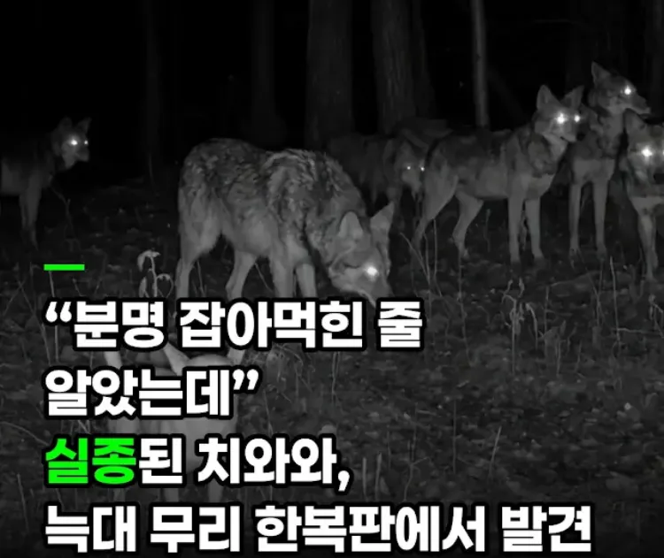
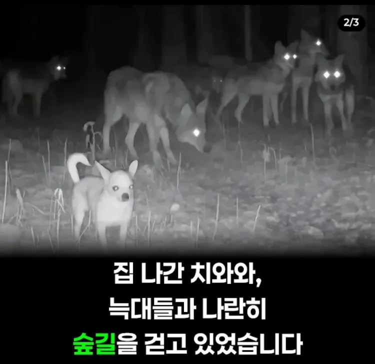
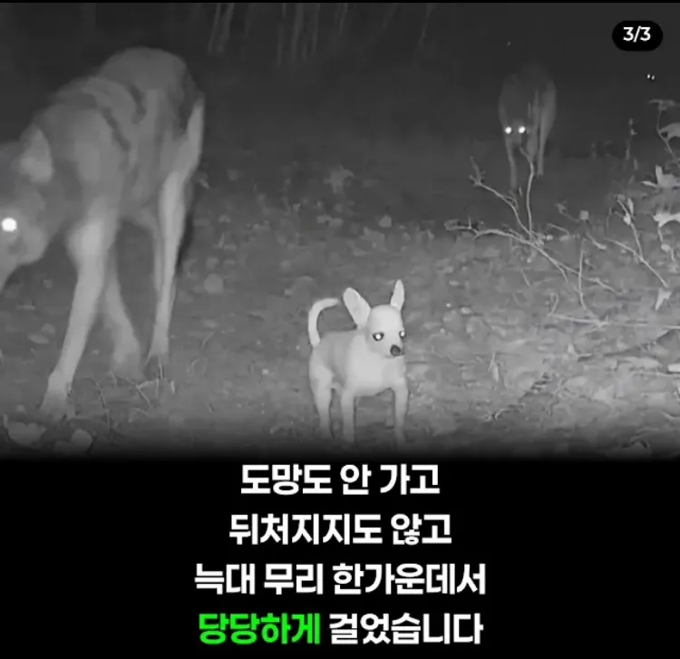
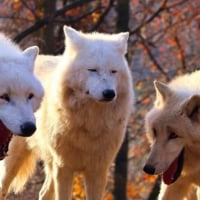

늑대 무리 안에서 분노조절잘해



늑대 무리 안에서 분노조절잘해
성격이 개 좆같아서 늑대 우두머리 된건가
보통 우두머리가 선두에 설껄 중간이면 나이많거나 어린개체임
ㅋㅋㅋ 쬐깐하니까 길잃은 어린애로 보고 끼워준건가
아니 늑대나 개는 나이를 냄새로 알아
몸도 작아서 자기 분량 못할 성견이지만 혼자서 하울링하고 있었을테니 저 뉴스가 사실이라면 진짜로 불쌍해서 끼워준거일껄
아 불쌍한건 맞는데 나이를 알아보는데 덩치보다 냄새가 중요하다고. 무슨말인가 했네
우두머리는 선두에 섬 수컷 우두머리가 선봉이고 후미가 2선부터 싸움가능한 성체들
중간은 보통 약자를 지키는 형태로 구성함
노블리스 오블리제 그 자체네
노블리스 오블리제가 아니라
모든 동물이 이렇게 구성해서 이동함
초식동물인 물소조차 이렇게 이동함
그래서 항상 포식자와 싸우는건 수컷인 이유고
자칼같은 무리사냥 하는 애들이 이 구성을 깨뜨리고 약한것만 쏙 빼서 잡아먹으려고 전략적으로 사냥하는 이유
코끼리도 약자라인을 가운데 두고 이동을 함
늑대 : 뭐지 이 첨보는 당당함?
늑대들도 펫마냥 데리고다니는거지
키링이여..
사실 "새낀가? 개 맞는데..." 하는 느낌으로 달고 다니는거
그래서 가운데 있음 ㅋㅋㅋㅋㅋㅋ
비상 도시락 아님?
동네 형들좀 사겼어 주인아 소고기좀 꺼내와봐
마스코트지 뭐
대충 흑인들에게 둘러쌓인 백인
AI
어휴 이 애새끼 귀엽긴한데 좀 좆같네
근데 기여워
쇼타를 뒤에서 바라보는 밀프들

비상시를 대비한 포켓바이트 같은건가
늑대도 동족포식을 하나?
흔한 AI슬롭
도시락
진짜 저렇게 차이나는데 유전자 차이가 1프로도 아니고 0.1프로 미만인게 너무 신기하다
??? : 흠... 얘는 좀 작은 늑대네.. 불쌍하니까 무리에 끼워주자
선조급
치와와: 윽... 봉인됐던 고대의 기억이